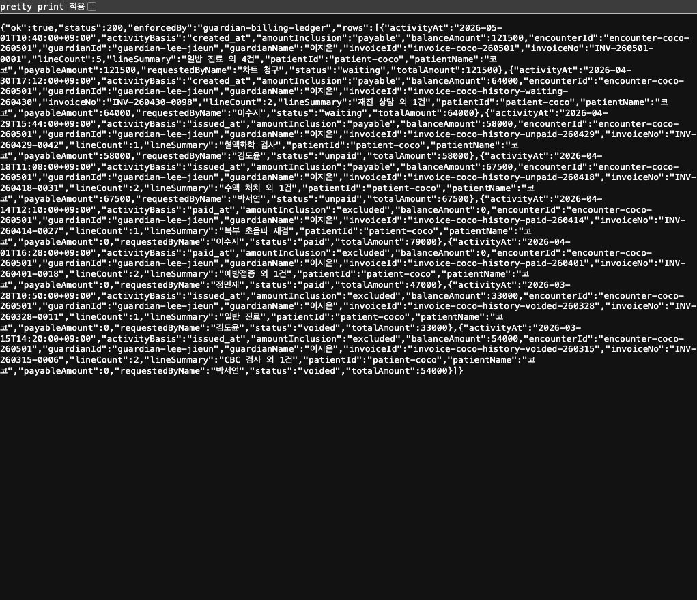
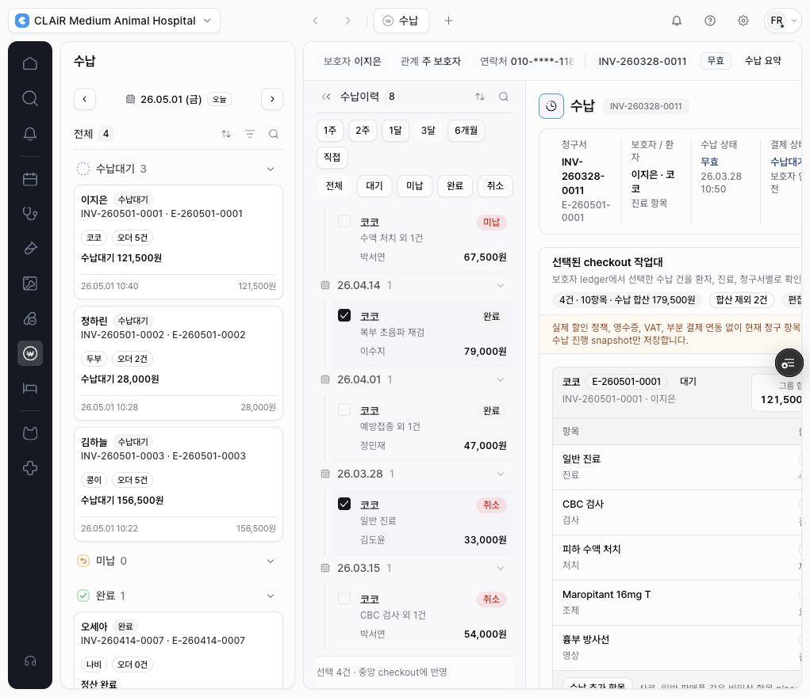

2026-06-01 · CLAiR EMR Billing Data Model & RPC Hardening · DEN-387
Guardian checkout preview UI-to-RPC 검증 결과
DEN-386의 guardian checkout UI-to-RPC 변경분만 clean temp workspace에 반영해 production이 아닌 Vercel preview로 배포하고, 보호자 수납 화면과 API readback을 검증했다. production deploy, production DB 작업, real data import, RLS replay는 실행하지 않았다.
결론
- 통과: preview deployment가 생성됐고 앱 화면에 로그인해 수납 화면까지 진입했다.
- 통과:
guardian-checkoutAPI는 preview에서 404가 아니며, 로그인 세션에서는200과guardian-billing-ledger결과를 반환했다. - 통과: 화면에서 현재 수납대기, 미납, 완료, 취소 이력 4건을 선택했을 때 결제대상 합계는
179,500원으로 유지됐고 완료/취소 2건은 합산 제외로 표시됐다. - 주의: preview는 Vercel Deployment Protection 뒤에 있다. 비로그인 CLI 접근은 Vercel 인증
401이고, Vercel CLI 인증 요청으로는 앱 인증 전unauthenticated가 정상 반환됐다.
Preview 정보
- Preview URL:
https://emr-app-shell-prototype-ns6r66ip4-mcso0s-projects.vercel.app - 검증 계정: synthetic staging 계정
front-desk2@clair.local - 검증 화면:
/w/clair-demo/billing?modulePanel=open&aside=history&right=open
API readback
- 응답:
ok: true,status: 200,enforcedBy: guardian-billing-ledger. - 행 수: 보호자 이지은 ledger
8건. - 합산 규칙:
INV-260501-0001은 payable121,500,INV-260429-0042는 payable58,000. - 제외 규칙:
INV-260414-0027완료와INV-260328-0011취소는amountInclusion: excluded.

화면 검증
- 수납이력에서
INV-260501-0001,INV-260429-0042,INV-260414-0027,INV-260328-0011을 선택했다. - 화면은
선택 4건,4건 · 10항목 · 수납 합산 179,500원,합산 제외 2건을 표시했다. - 완료/취소 이력은 상세 확인용으로 남고 현재 결제 금액에는 들어가지 않는다는 안내가 표시됐다.

로컬 검증
npx eslint src/features/billing/module.tsx tests/billing-guardian-checkout-hardening-server.spec.ts통과.npx tsc --noEmit --pretty false통과.npm run docs:checktemp workspace 기준 통과.- Vercel preview build 통과:
Ready in 2m.
다음 판단
DEN-387은 Human Review로 넘길 수 있다. fixed staging alias 자체를 새 preview로 전환하거나 production으로 승격하는 작업은 이번 범위 밖이며, 승욱의 별도 승인 없이는 진행하지 않았다.